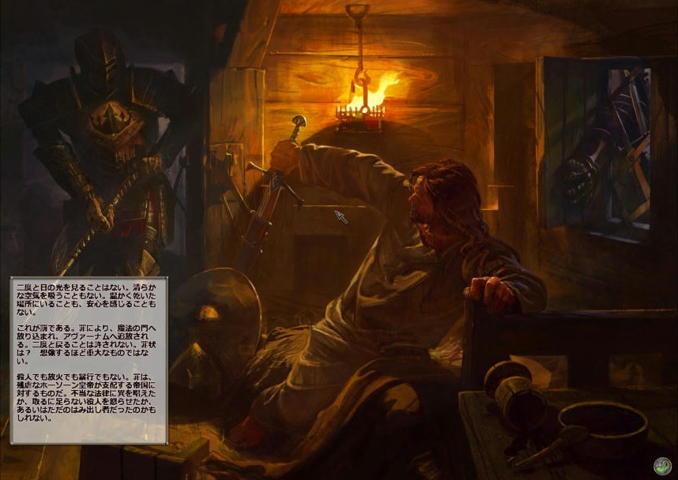
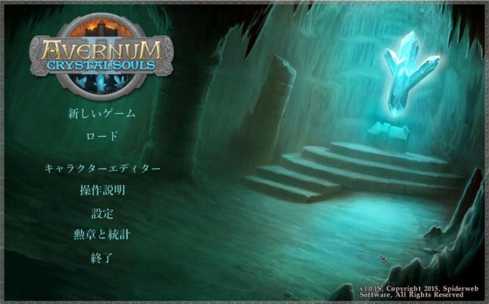
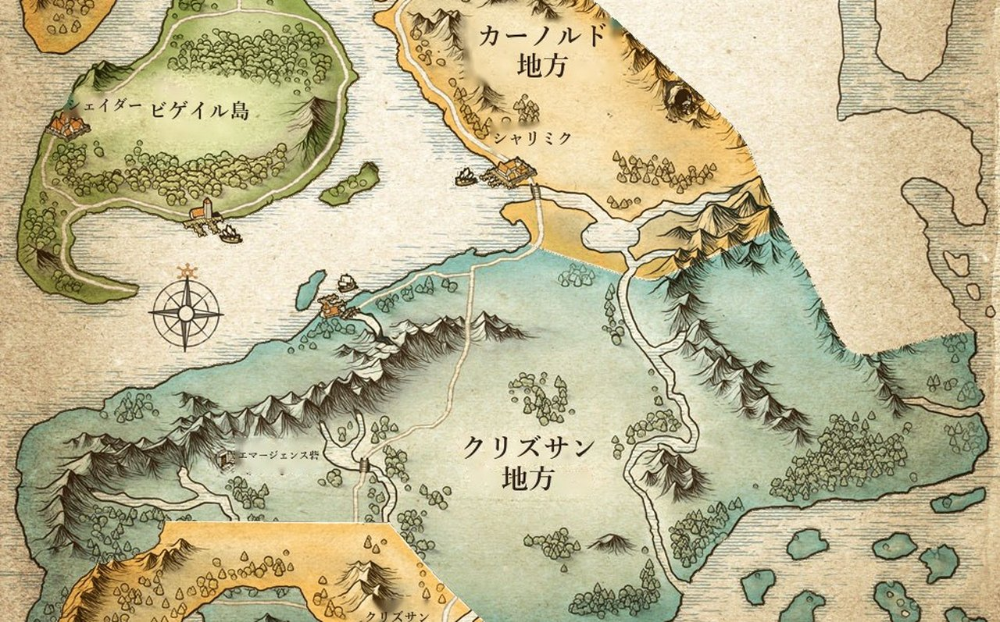
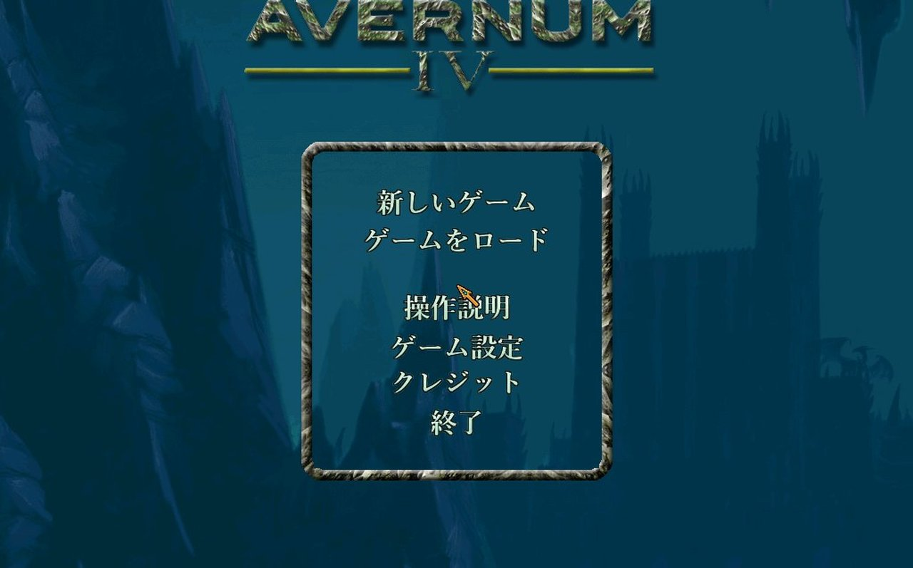
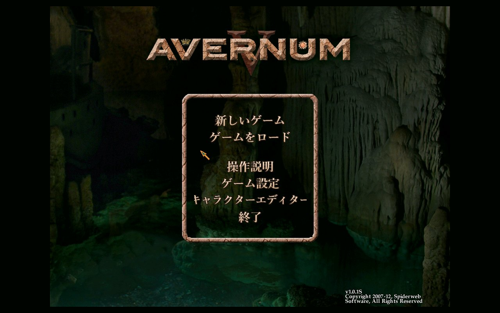
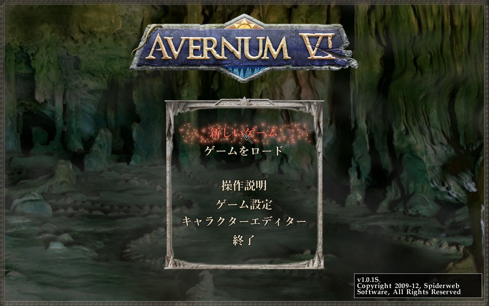
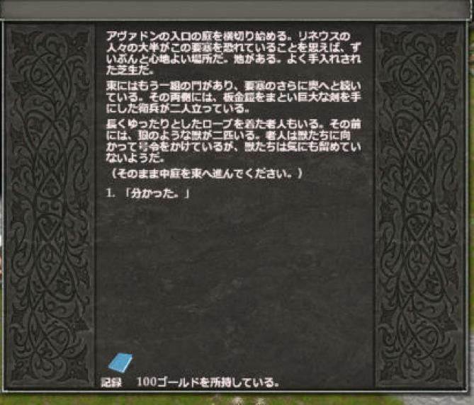

対応している版
Windows の Steam 版に対応しています。ほかのストアの版で使えるかどうかは、各作品のページをご覧ください。
ご意見・誤訳の報告
誤訳や表示の崩れに気づいたら、各作品のページにある GitHub の Issues で教えてください。シリーズ全体についてのご意見は こちらの Issues へどうぞ。
Spiderweb Software のアヴァーナム（Avernum）シリーズとアヴァドン（Avadon）シリーズを日本語で遊べるようにする、非公式のファンメイド日本語化プロジェクトです。 会話・本・アイテム・画面の文字までほぼすべてを日本語にします。 どのパッチも、ゲームフォルダにファイルを置くだけで使え、ゲームのファイルは書き換えません。置いたファイルを消せば英語に戻ります。
罪人が追放される地下世界アヴァーナムを舞台にした、見下ろし型のファンタジー RPG。






五つの国の盟約を守る要塞アヴァドンに仕え、密命を帯びて各地を旅する RPG。

Windows の Steam 版に対応しています。ほかのストアの版で使えるかどうかは、各作品のページをご覧ください。
誤訳や表示の崩れに気づいたら、各作品のページにある GitHub の Issues で教えてください。シリーズ全体についてのご意見は こちらの Issues へどうぞ。